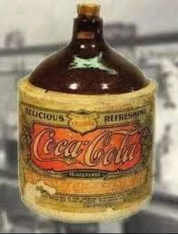

The addiction to success
The story of Coca-Cola begins not with a dream, but with pain. In 1885, after a Civil War, pharmacist John Pemberton became edicted to alcohol
and drugs. Desperate for a solution, he began experimenting, searching for painkiller.
His first invention was "Pemberton's French Wine Cola," an alcoholic drink. But then came a major difficulty: in Atlanta passed prohibition for
alcohol drinks. Pemberton had to act fast, he needed non-alcoholic version. He went back to his laboratory, which smelled strongly of aromas
from various plants and began to experiment. He would chop, slice and peel ingredients, trying to find the perfect mix.
But the real magic happened by accident. On May 8, 1886, at a pharmacy, a seller was serving a customer. He had to stir the new
syrup with water, but by mistake, he mixed it with sparkling water. The customer loved the tasty, fizzy result. The first glass of Coca-Cola
was sold for five cents.
Pemberton was not a businessman. In his first year, he sold only about nine glasses a day. Suffering from poor health and deep in debt, he
began selling portions of the company. He sold two-thirds of it for little money, just to pay his bills. In the end, he sold the remaining
rights for just a few hundred dollars. He died in 1888, never knowing the empire he created. Asa Candler, who bought it, saw its potantial and
turned it to a national treasure.